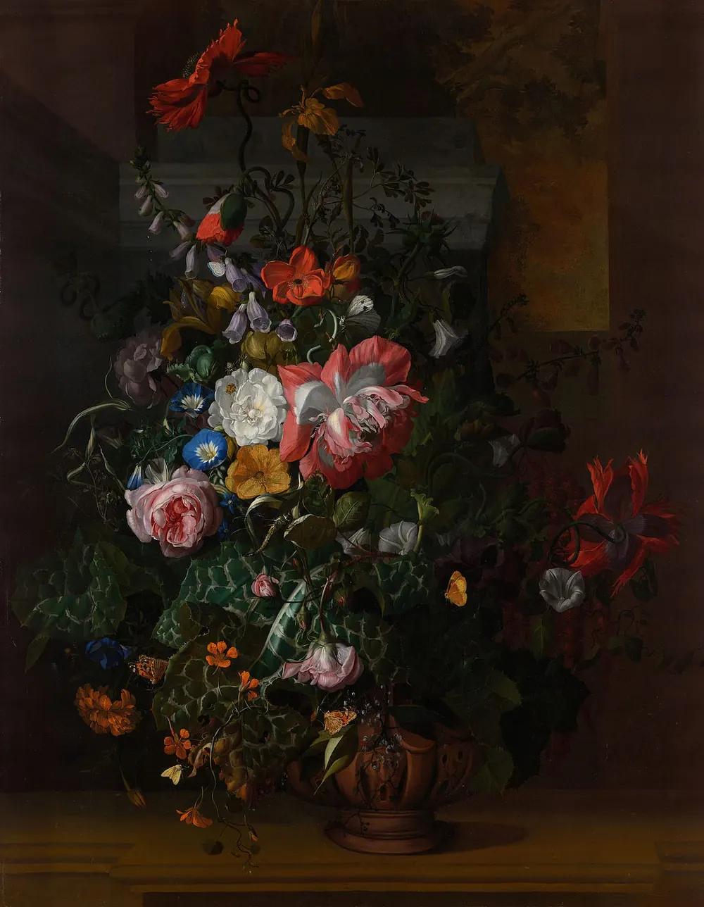
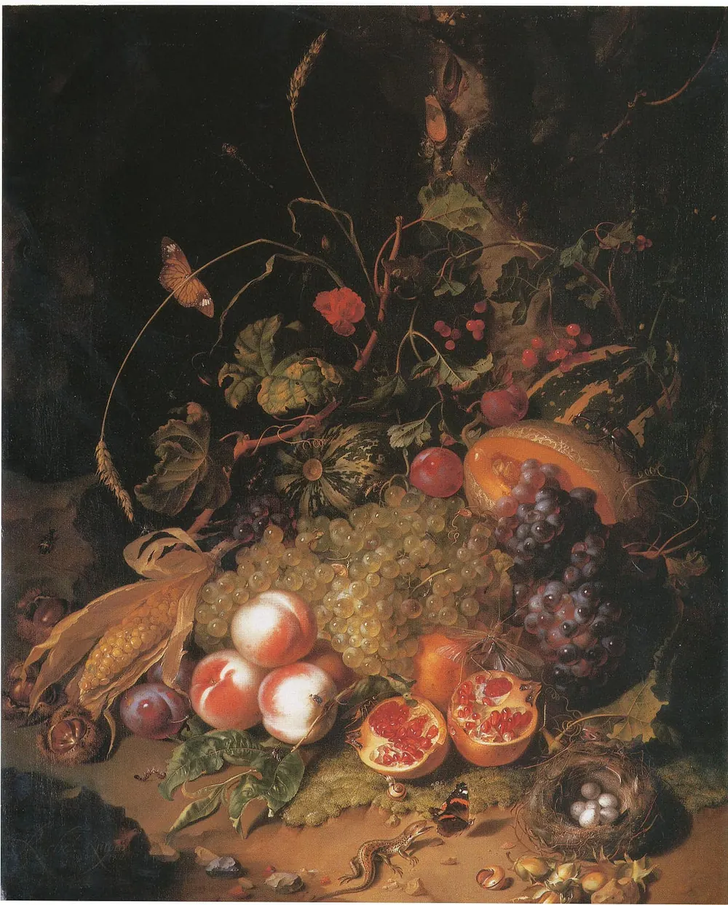
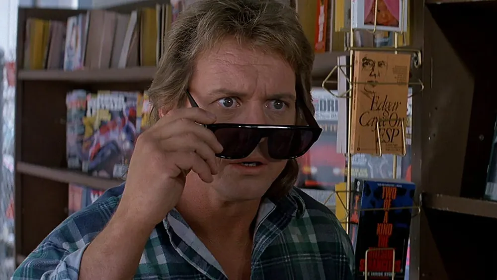
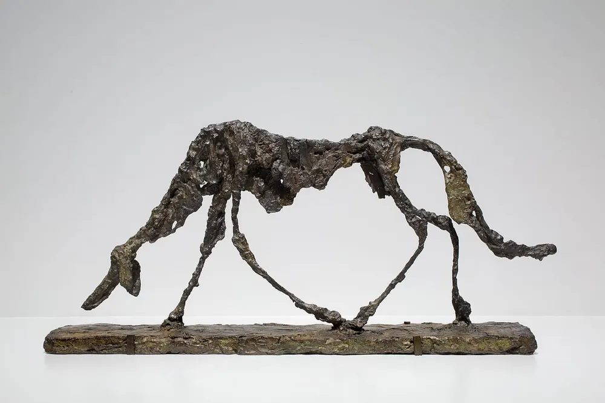

Diario de un Robot · 8 de febrero de 2026February 8, 2026
El florecer abandonó a la rosa
¿Todo es traducible? ¿Algo es traducible? Desde el desencanto hasta el intento de seguir buscando aunque nunca vayamos a encontrar.
This essay is only available in Spanish for now.
Escuché la expresión the bloom is off the rose y la angustia volvió a mi pecho. Si uno presta el oído el ruido se convierte en señal, aparecen los mensajes. La frase me descolocó con una tristeza inmensa, desplegando un manto melancólico.
Una traducción literal sería “el florecer dejó a la rosa” o “el florecer terminó en la rosa”, una expresión alienígena para nuestro castellano. Opciones más cercanas son “la flor se marchitó” o “la rosa perdió su encanto”, quizás metafóricamente más cercanas a nuestro idioma, pero alejadas de nuestras expresiones cotidianas y cómo expresamos el desencanto.

“Se terminó el idilio” sería una versión relativamente poética a usar de forma equivalente, pero no logra recuperar la imagen de la rosa perdiendo su atractivo, los pétalos cayendo uno a uno, un objeto bello cuyo lustre lo abandona. El idilio es un estado abstracto, originalmente un poema, mientras que la rosa y su florecer son imágenes concretas sin dejar de ampliar el sentido gracias a la rosa, protagonista de mitos, cuentos, leyendas y encantamientos.
Podríamos decir también “se acabó la luna de miel”, pero de nuevo, perdemos potencia. La luna de miel nos lleva inmediatamente a una pareja, a dos personas que pasan de un estadio de su relación a otro, un ritual para atravesar un espacio liminal. Aunque se trata de una experiencia relativamente universal (¿hay experiencias universales? ¿no son todas singulares?), ya no se trata de la experiencia de ver marchitarse una rosa. Implica un cambio en la forma de ver, pero no en lo que es. Las personas que vuelven de una luna de miel son y no son distintas, sobre todo si viajaron en el barco de Teseo. Una rosa que se marchita ya no puede volver atrás, la entropía es tiránica.
Hay alternativas metalizadas como “se le fue el brillo”. Apto para espejos, cúpulas de bronce, estatuas, artefactos arqueológicos, espadas herrumbradas y más elementos de los que esta lista puede almacenar. Por suerte, “se le fue el brillo” es concreta, es visual, como los cuadros de Rachel Ruysch que resaltan la degradación, inspirada por el vanitas. Remite a cuando vemos un objeto desgastarse, perder su lustre, caer bajo la inclemencia del oxígeno que todo lo herrumbra o palideciendo por la fuerza de los rayos de sol. Puede que no solamos ver el brillo irse de una rosa, a menos que esté encantada, claro, pero puede abandonar a una gema, un talismán, un crucifijo… La expresión logra todo esto también pudiendo ser aplicada a elementos abstractos; una idea puede perderlo, una relación también, cualquier objeto de nuestro entusiasmo, como un curso, un trabajo o la carrera de la facultad, alguien que escribe.
La enumeración de alternativas en nuestro idioma no será exhaustiva, pero un semejante rioplatense podría ser “se pinchó el globo”. Acto absolutamente diferente al marchitarse de una rosa, pierde la medievalidad de la rosa, su atemporalidad, con un objeto (el globo) enmarcado en un tiempo y espacio concreto. La frase es muchísimo más sonora, impactante; expresión que viene con estruendo, con el PLOP del estallido (¿o hace BLAM? Tendría que revisar mis historietas). De chico me tapaba los oídos cuando iban a explotar globos, pasatiempo de más de un compañerito sádico de primaria e incluso grandulones de secundaria. Podía llegar a llorar del ruido, además de estresarme sobremanera. Hoy en día no dejo de taparme los oídos y resentir a quien los estalle voluntariamente, pero al menos ya no lloro: me voy de la habitación. Me resulta entonces evidente que el marchitarse agraciado de languidecer aristocrático que tiene una rosa nada tiene que ver con el reviente bárbaro y plebeyo del globo.

“Ya no todo es color de rosa”. Otra opción que hace pensar en “ver todo color de rosa” o “ver a través de lentes rosas”, como los lentes de They Live que metaforizan la ideología como algo que nos ponemos, unos lentes particulares para ver el mundo. Quizás la traducción es un lente que nos permite ver otra realidad y, por consecuencia, apreciar que en realidad lo que asumíamos de facto era solo una perspectiva más. La expresión en este caso comparte la palabra “rosa”, pero no es la misma rosa. El carmín de la flor apenas si guarda semejanza con el color rosa. La sangre y la espina en contraste con las plumas de un flamenco. Es cierto, hay rosas rosas y rosas rojas. Pero, ¿en qué rosa piensa quien lee la palabra rosa cuando escribo rosa?
Rose is a rose is a rose is a rose.
La cita es de Gertrude Stein y forma parte del poema “Sacred Emily” (escrito en 1913 y publicado en 1922). Se suele interpretar como “las cosas son como son”, en cierto modo cercana a “al pan, pan y al vino, vino”, aunque la frase castellana refiera a la claridad de un argumento, o más bien a evitar eufemismos. Para Stein el simple hecho de nombrar algo convoca las imágenes y emociones asociadas, una especie de arquetipo de rosa combatido por la imagen de la rosa.
Necesariamente la imagen de la rosa es personal: la palabra rosa me hace pensar en las rosas de mi padre y su podar delicado, en las rosas de Ramona y el agua con hielos, en las rosas que vi una vez en Puerto Natales de camino a Torres del Paine con catorce días en la mochila, en la foto de mi papá entre las rosas del Hotel Tronador, en el celuloide de la Bella y la Bestia, en la rosa de Oscar Wilde (¿o era un clavel? No importa si yo lo imagino como una rosa). Quien me lea y lea “rosa” imaginará sus propias rosas.
Shakespeare escribe “What’s in a name? That which we call a rose by any other name would smell as sweet”, indicando que los nombres de las cosas no afectan como realmente son y a la vez funciona para que Julieta diga ¿y a mí qué me importa tu apellido? Dos de familias rivales aún pueden amarse, como escribe en Hamnet Maggie O’Farrell, usando al propio Shakespeare de personaje. Incluso en las palabras inmortales de William hay controversias: hay al menos dos versiones de Romeo y Julieta, indicando que incluso dos escritos de una misma obra pueden no ser semejantes. Las copias escapan a la tautología gracias a la intervención del azar y la fortuna. Pero, ¿dónde quedó nuestra frase original?
The bloom is off the rose es the bloom is off the rose, no es un globo, no es una luna de miel, no es un brillo, no es un idilio. Tampoco es “le cayó la ficha” ni “se acabó la dulzura” ni “se terminó el romance”. Puede que en cierto sentido sí sea “se terminó la magia”, pero porque la rosa y la magia están ligados, como la piedra filosofal está ligada a ambas. Las redes de significados se tejen y destejen sin consultar a nuestra voluntad, están allí, dadas, eternamente transmutadas, dependientes de la historia, la cultura, los azares y el mundo que nos rodea, como las constelaciones. Pero incluso aunque “se acabó la magia” suene acorde a the bloom is off the rose, nada puede ser lo que no es. Continúa el misterio.

Umberto Eco tituló a su novela El nombre de la rosa en cierto acto asertivo y caprichoso al mismo tiempo. En Apostillas al nombre de la rosa cuenta que descartó títulos más concretos y enfocados que pudiesen guiar al lector hacia una lectura específica. No recuerdo dónde, pero leí que los títulos deberían ser “heridas”, en el sentido etimológico “golpes, cortes, perforaciones”; pienso en una rendija a través de la cual mirar al otro lado, como el cielo estrellado que imaginaban los presocráticos, perforado en pequeños puntos que permitían pasar la luz de las estrellas o el experimento de la rendija por la que pasa un láser, demostrando su capacidad de comportarse como una onda, mostrando patrones inesperados.
Eco resalta el símbolo de la rosa y su pluralidad de significados, al punto que ya los perdió todos: la rosa mística, la guerra de las rosas, los rosacruces… Pero esta característica le agradó, queriendo establecer un título que confunda, que no guíe. No niega que el título es en sí mismo una clave de lectura y que necesariamente favorece cierta interpretación, pero intenta correrse de ese sitio. Su última frase de las Apostillas es clarísima:
El autor debería morirse después de haber escrito su obra. Para allanarle el camino al texto.
Esto le daría la flexibilidad y vivacidad necesaria al texto; como cuando alguien que conocemos muere y sus historias se convierten poco a poco en mitología. Cada familia tiene su panteón. Pasamos de lo real (si es que puede ser aprehendido) a la fantasía, lo inexistente pero mítico.
Nulla rosa est es otro enunciado citado por Eco en sus Apostillas, lo utiliza para mostrar que el lenguaje puede hablar tanto de lo desaparecido como de lo inexistente. Puedo llevar entre mis labios y enunciar los castillos de antaño, la nomenclatura de las ciudades romanas, las especies que ya no caminan entre nosotros, las criaturas imaginarias que nunca habitaron nuestros bosques, los nombres de Dios o los vivos que vi morir. De todo lo que desaparece solo nos quedan los nombres. ¿Será un día donde ya solo nos queden los nombres de los nombres?

De hecho, la última frase de El nombre de la rosa, stat rosa pristina nomine, nomina nuda tenemus, nos lleva a una interpretación nominalista del texto: doctrina que descree de los universales y los abstractos, postulando que todo lo que existe es particular; Funes el memorioso hecho filosofía. Con este grado de granularidad perdemos toda capacidad de unir y comparar el mundo, cada átomo, no, cada partícula subatómica es su propia entidad; nada es fungible, todo se torna insustituible.
El lenguaje nos permite decir que algo se asemeja a otra cosa, pero si se asemeja necesariamente tiene diferencias; si no tuviera diferencias, sería ese mismo algo. O disímiles o semejantes, pero existen globalmente solo dos estados diferentes; la delimitación de un objeto lo distingue de los demás, incluso cuando se trata de un objeto del lenguaje, siendo imposible la perfecta delimitación a través de la palabra.
Intuimos entonces que la traducción es otra de las tareas imposibles. Ya encontramos que mantener es imposible, que entender el tiempo es imposible, que adquirir algún sentido de la dimensión de la literatura es imposible. ¿Deberíamos asumir la imposibilidad de la traducción? Podemos intentar no rendirnos, pero es sano aceptar la existencia de los imposibles. Podemos aceptar que la búsqueda no tiene fin sin dejar de disfrutarla.
En la búsqueda de una traducción acorde, la enumeración de opciones es posible: “ya no tiene el mismo encanto”, “se le fue el romanticismo”, “se le cayó la careta”, “se cayó del pedestal”. Podría seguir, pero la acumulación de alternativas no acerca a la metáfora. Expande, pero no cubre los huecos propios de nuestro lenguaje. Cubre un campo mayor, pero cuanto más grande un objeto, mayor es su perímetro. Es la paradoja del conocimiento: cuanto más sé, mayor es la frontera con lo que no sé y, por lo tanto, siento que sé menos, más palpable es la percepción de mi ignorancia.
Por otro lado me pregunto, como escapatoria por arriba quizás, ¿podríamos acuñar la frase original? Nuestro idioma no permite una transliteración uno a uno, pero ¿qué mejor manera de honrar a la lengua que inaugurar una vía paralela donde pudiésemos decir lo hasta ahora inefable? En La tarea del traductor, Walter Benjamin nos dice que el arte debe presuponer un carácter físico y espiritual de quien recibe el texto, el arte presupone la existencia de un humano que interpreta y, según Benjamin, no intenta atraer su atención.
Según él, la traducción no debe intentar ser un acto de mera comunicación, la traducción para “tener sentido” en el nuevo idioma objetivo es empobrecedora. Va al punto de ponderar la intraducibilidad de ciertas formas idiomáticas, por ejemplo, podríamos suponer que al encontrarse con the bloom is off the rose nos diría que la semejanza absoluta es imposible, que hay cierto encanto en las monstruosas traducciones literales, que traducir requeriría asumir la imposible posibilidad de ser objetivos y demostraría cómo las traducciones tienen una fecha de vencimiento, mientras que el idioma original envejece mejor.
La tarea de la traducción, como la de pretender que la rosa no pierda su florecer o la del mantenimiento, parece ser imposible. La racionalidad de la argumentación me es insuficiente para poder justificar la búsqueda que se torna una orientación a lo trascendente. Ante mis propios límites, me remito a palabras ajenas antes de rendirme. La poesía esconde verdades diferentes a la ensayística:
Seguí caminando, aunque no haya ningún lugar adonde llegar.
No intentes ver a través de las distancias.
Eso no es para los seres humanos.
Movete por dentro, pero no te muevas como te mueve el miedo.
Hoy, como cualquier otro día, nos despertamos vacíos y asustados.
No abras la puerta del estudio y empieces a leer
Tomá un instrumento musical.
Dejá que la belleza de lo que amamos sea lo que hacemos.
Hay cientos de formas de arrodillarse y besar el suelo.—Rumi
El florecer abandonó a la rosa y yo la búsqueda de alternativas.
Perdí la cuenta de cuánto tiempo tomó este correo.
Esta semana estuve angustiado, puede que algo de eso se traduzca al texto, espero no contagiártelo. Creo que hay cierta continuidad temática con el artículo de la semana pasada, los laberintos de la mente tienen habitaciones parecidas e interconectadas.
La próxima me esperan varios proyectos, puede que arranquemos con un taller de escritura o lectura orientado a ciencia ficción, fantasía y weird; estarán en tratativas los servicios editoriales para un libro y tengo pendiente maquetar un fanzine con los textos de nuestro grupo del año pasado.
Sísifo amaba a su piedra, voy a intentar cargar la mía, ahora que le estoy encontrando el modo.
Nos leemos la próxima, que tengas una gran semana.